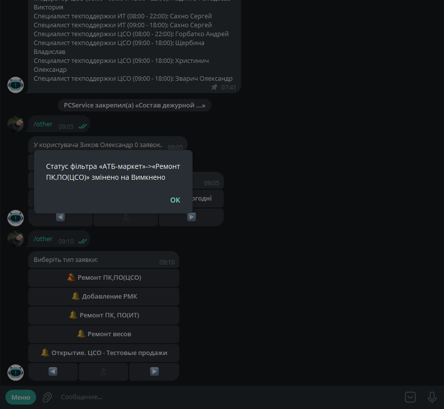
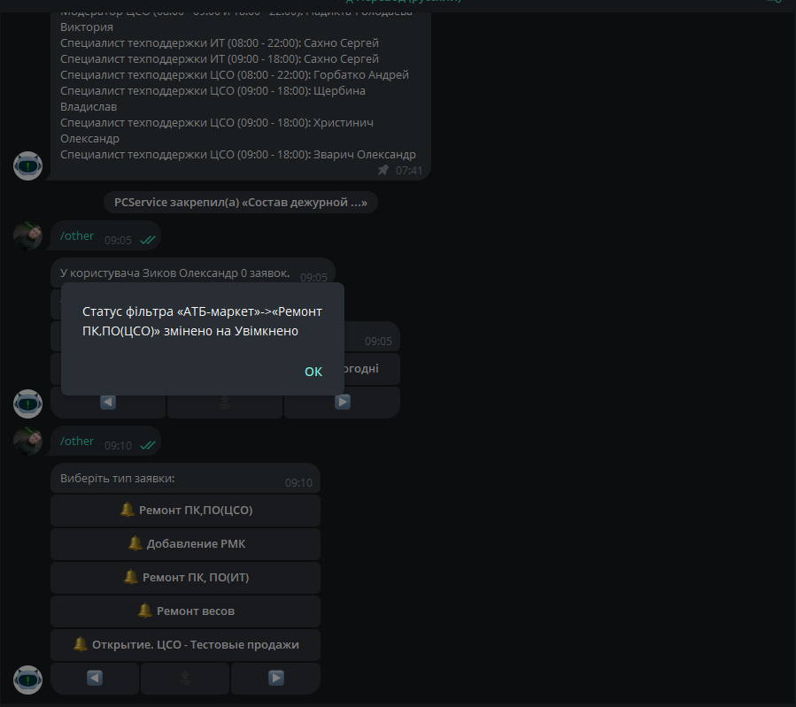

Ці налаштування впливають на всі сповіщення, пов'язані із заявками. Використовується для ввімкнення/вимкнення сповіщень за конкретними типами заявок для конкретних замовників. Приклад: Користувач не хоче щомісяця отримувати безліч сповіщень про призначення йому заявок на ТО. У цьому випадку він вибирає замовника і вимикає сповіщення про ТО. (Важливо, при цьому заявки відображаються у всіх списках)
Вимкнути сповіщення (При натисканні на фільтри, він вимкнеться і дзвіночок біля нього стане перекресленим, також з'явиться текстове сповіщення) 
Увімкнути сповіщення (При натисканні на фільтри, він увімкнеться і дзвіночок біля нього перестане бути перекресленим, також з'явиться текстове сповіщення) 